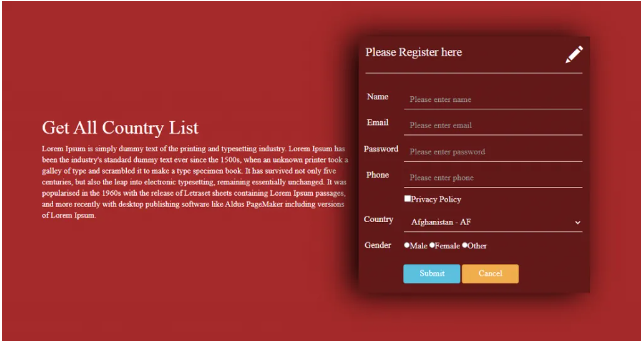

In this tutorial I will share you How to get the country list in laravel , we need to follow some simple steps, So It is not better if you create a database table with the country and then manually you store all information from google or something else.
So Lets Start : Laravel dynamic dropdown country
In this step we will create a migration file and create Table Country
>>>>>>>>> php artisan make:migration create_countries_table
After this command open your migration file under the Database Folder, paste the code
After this run this Command :
>>>>>>>> php artisan migrate
Now we will create a model For Country
Run This Command :
php artisan make:model Country
Now we will make a controller for get country and pass into our blade file
Run This Command :
php artisan make:controller CountryController
Now define your Controller in Route File
Route::get(‘/’,’CountryController@index’);
In this step, we will create a seeder file for storing all countries data in countries table
>>>>>>>>>>>>>>>> php artisan make:seeder CountrySeeder
Run This Command :
php artisan db:seed
Now we create a view fiel name country.blade.php
Output :
So in this tutorial we learnt How to get country list in laravel
